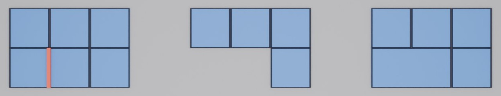

Bonus lesson
Delete vs Dissolve
Removing parts of a mesh sounds simple, but Blender gives you two different ways to do it, and they give different results. Delete removes the selection and whatever depends on it. Dissolve removes the selection but fills in the surrounding geometry, so the surface stays closed. Both live in the Delete menu in Edit Mode.
1. The same edge, two results

The manual describes it this way: Delete on edges removes the edges and any faces they share, while Dissolve removes the geometry and fills in the surrounding geometry, so you do not have to patch holes afterwards.
2. Delete
In Edit Mode, select something and press X (or the Delete key) to open the Delete menu. The choices are:
- Vertices: removes the vertices and any edges and faces connected to them.
- Edges: removes the edges and the faces that share them.
- Faces: removes only the faces.
- Only Edges & Faces and Only Faces: limited versions. Only Faces removes the faces but keeps the edges inside the selection.
3. Dissolve
The same menu has the Dissolve options. Dissolve Vertices removes the vertex and merges the faces around it (two edges become a single edge). Dissolve Edges removes edges that share two faces and joins those faces. Dissolve Faces merges a region of faces that share edges into a single face. The manual says dissolving can turn the selection into a single n-gon. Ctrl+X is a shortcut that dissolves based on your current selection mode (vertex, edge or face).
Dissolve Vertices has two options. Face Split limits the dissolve to the corners of the faces connected to the vertex, which avoids very large uneven n-gons. Tear Boundaries splits off face corners instead of merging faces.
4. Cleaning up detail
Limited Dissolve simplifies a mesh by dissolving vertices and edges that separate flat regions. Its Max Angle setting controls how much detail is removed on flat faces and straight edges. Collapse Edges & Faces (in the X menu) collapses each isolated edge or face region into a single vertex; the manual suggests it for taking a ring of edges and removing the face loop it ran through. It compares the options: Delete Vertices leaves holes, Collapse Vertices does not correct UVs, and Dissolve Vertices often creates n-gons.
Edge Loops in the Delete menu removes a selected edge loop that sits between two other edge loops, merging the faces on both sides so one face loop remains where there were two. The manual warns it is very different from deleting edges, which would leave holes.
5. Merge
To join vertices instead, select them and press M for the Merge menu. At Center puts the remaining vertex at the center of the selection, At Cursor puts it at the 3D Cursor, and Collapse merges each connected island of selected vertices to its own center. At First and At Last are only available in Vertex select mode, and depend on the order you selected in.
Read the manual pages on Deleting & Dissolving and Merge.
Exercise
Add a cube, press Ctrl+R to add a loop cut through the middle, and switch to Edge select mode. Select one of the new edges and press X, then choose Edges: the faces beside it disappear. Undo with Ctrl+Z, then press Ctrl+X instead and compare. The faces are joined and the surface stays closed.